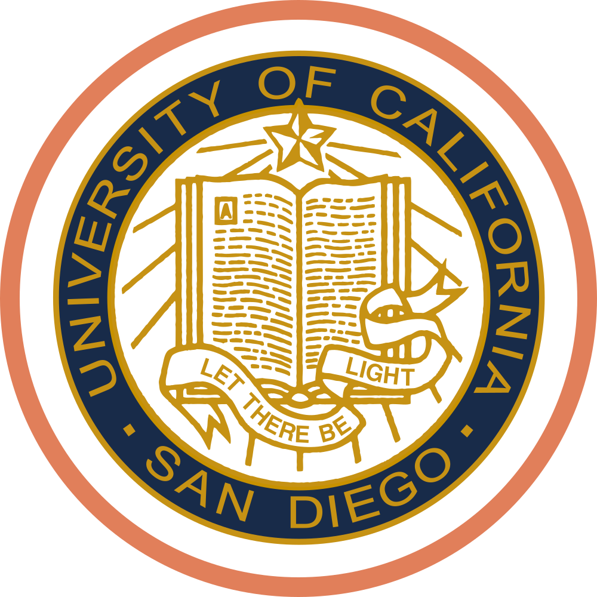
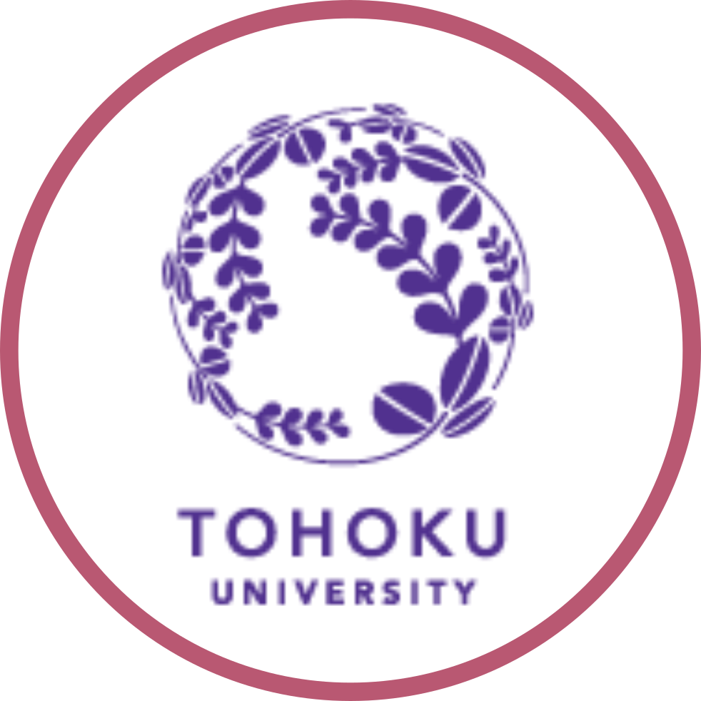
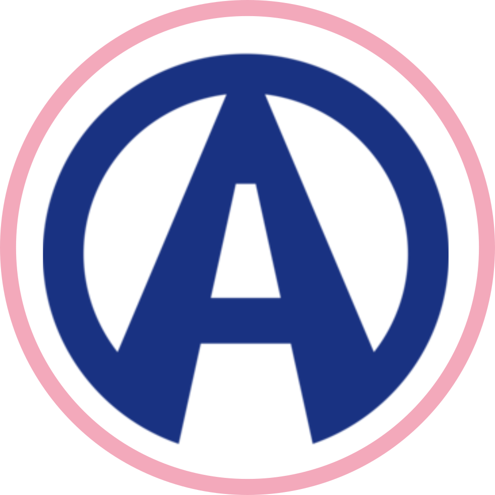
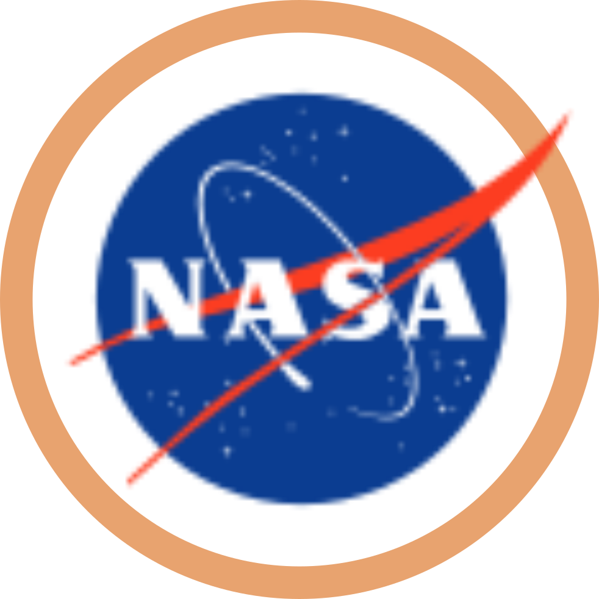
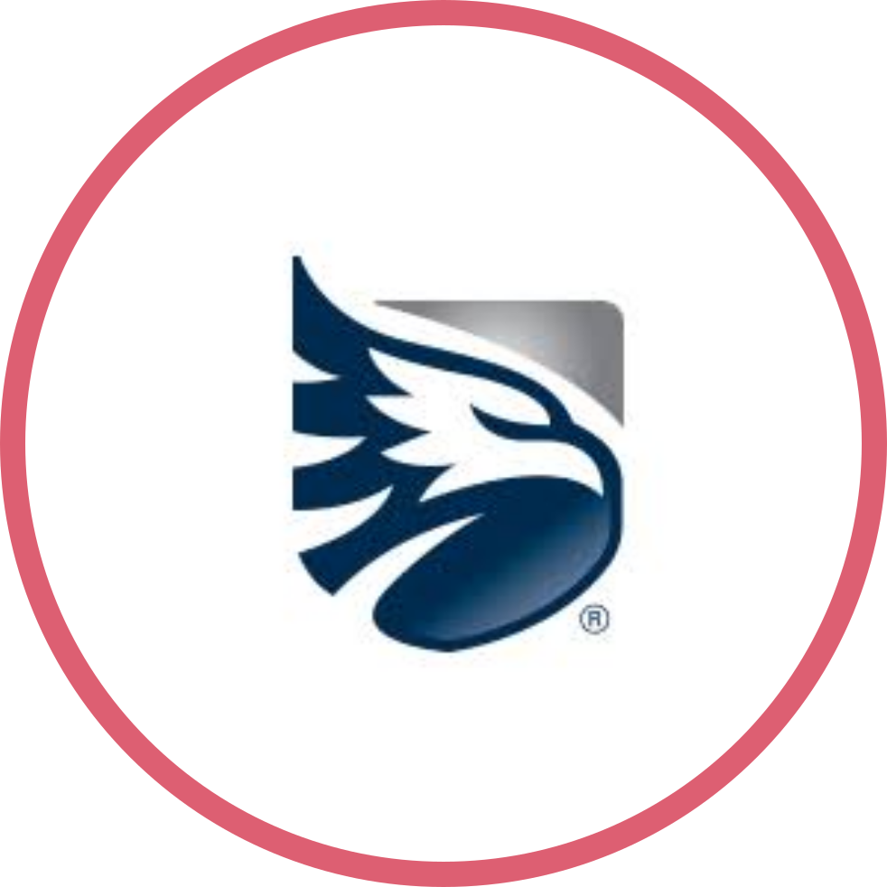

 |
University of California, San Diego
B.S. Computer Science, minor in Economics
Honors: Magna Cum Laude, Provost Honors, Caledonian Honor Society
Turned down top business schools to study economics here. Left with a computer science degree. UCSD provided resources for whichever path I chose to take. I fell in love on move-in day, because I could see the ocean from our freshman dorm room. I fell harder for its supportive computer science community; we build each other up. I had the opportunity to transfer to my dream college, but I stayed. There was never a boring day, though there were many challenging ones- and there were always more opportunities.
|
 |
Ito Laboratory
Researcher
I conducted a study in machine learning at the Ito Laboratory, working on using CNNs to classify facial expression in video. Through my research, I developed a program in Python to perform real time facial expression classification. The most fun part? Recruiting 20 Japanese university students to act on camera for my test data. Through my research all my loves came together: computer vision, communicating technical concepts, and observing people interact with technology.
|
 |
Abalta Technologies
Software Engineering Intern
I worked on Abalta's product team specializing in Android mobile development. I helped make the Android app available in 6 different languages, through soft keyboard implementation and string localization. In the process, I interviewed an Arabic speaker to make sure the most important diacritics were represented. Learned a little bit about Arabic like I thought I always wanted to, and realized it was harder than I ever thought. I also proposed and implemented Android flavors,in order to support application customizations for different clients.
|
|
UCSD Computer Science and Engineering Department
Tutor
I tutored CSE 8A + 8B, UCSD's introductory programming class, as well UCSD's gateway upper division course, CSE 100 - Advanced Data Structures under Professor Paul Cao. Tutors were a critical part of my academic experience, I'm glad I got the chance to give back! As a tutor, I held lab hours and helped students complete their programming assignments by discussing logic, explaining concepts, and helping them debug. In addition, I wrote and published supplementary material and practice problems to aid beginning students in grasping the material.
|
 |
California Space Grant Consortium
Arduino Computer Development and Programming Intern
I was an intern at the California Space Grant Consortium, a NASA sponsored program to understand and develop aerospace resources. We built sensors, soldered components, and programmed Arduino microcontrollers to attach to the payload of near space balloons. The sensor package we built recorded data on temperature, pressure, humidity, and UV exposure, and was used as a tool for research.
|
 |
BofI Federal Bank
Operations and Analytics Intern
I spent my first half of college aiming to be a certified public accountant. This was an effect of that desire. Through this internship I got a taste of the income property lending market, and issued $5 MM worth of letters of intent (LOIs) after analyzing a variety of risk factors. I trained a machine learning program that tagged documents, differentiating between appraisals, tax returns, escrow paperwork, etc. I also got exposure to business analytics in the workplace, working with SQL queries and building reports.
|
|
CollegeSpring
Instructor and Mentor
I worked as an instructor at CollegeSpring, which helps even the income-educational achievement gap by making college prep services available to students from low-income backgrounds. I taught SAT prep in a classroom setting and mentored students through their college applications. I learned to use my empathy as a student to invigorate and involve my students. During the following quarter of college, I also used my newfound empathy for educators to increase the value of my own learning. I finally know what drives professors & teachers nuts after being subject to it myself (To my teachers: I'm so sorry!)
|
|
International Rescue Committee
Tax Preparation Intern
This was another effect of me aiming for a career in public accountancy. However, it remains as one of my most treasured experiences. I had the pleasure of interacting with, interviewing, and filling out tax returns for refugees and members of the greater San Diego community. I had the privilege of working with kind staff who were patient in guiding a teenage me. I don't do anything with taxes now (beyond my civic duty, of course), but each treasured encounter I had through this experience has helped shape my desire to make a difference in the world by engaging with and serving others.
|